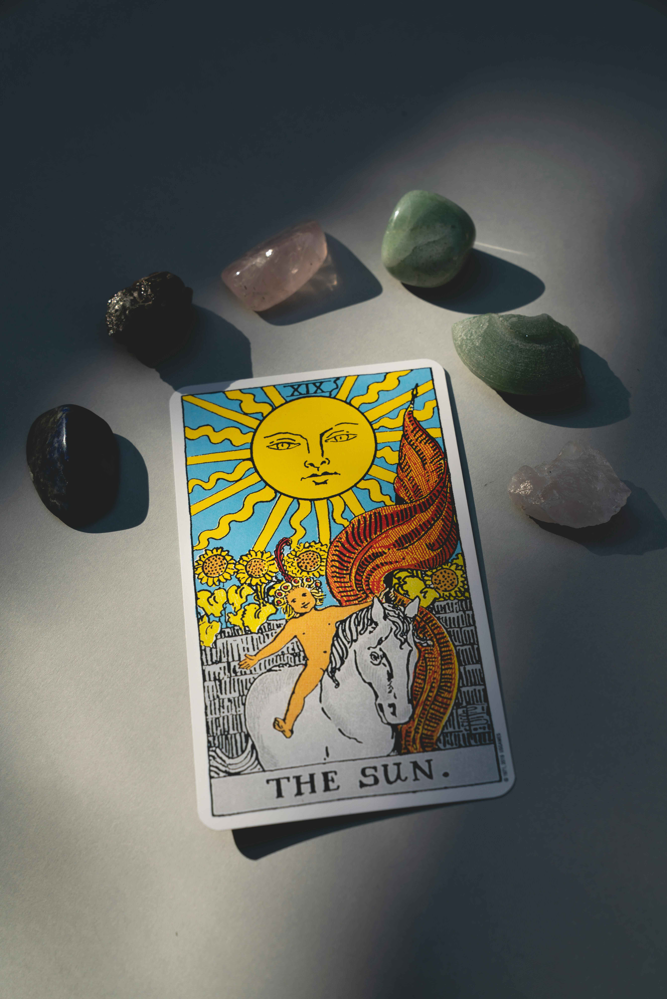
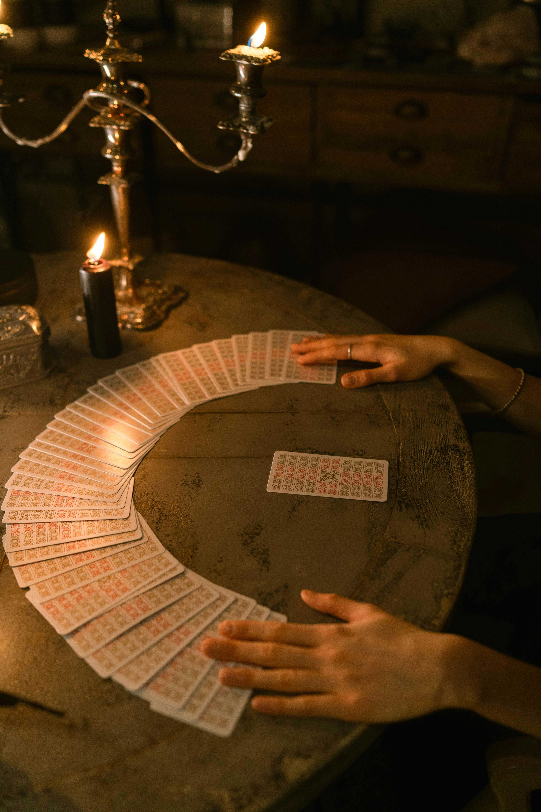

How to Add Tarot to Your Everyday Lifestyle
Incorporating tarot into your daily routine can be a powerful way to stay connected to your intuition and reflect on your goals, decisions, and personal growth. For young adults navigating school, new relationships, or the transition into adult life, tarot offers a way to check in with yourself regularly. You don’t need hours of meditation or complicated rituals—tarot can easily fit into the flow of your day, providing clarity and guidance when you need it most.
Another easy way to use tarot is to integrate it into your decision-making process. Whether you’re choosing a college major, weighing job offers, or thinking about a relationship, tarot can help you explore the potential outcomes. Pull a few cards to explore different options and see how they align with your values and goals. While tarot isn’t about predicting the future, it can offer valuable insights into what feels right for you, helping you make decisions with more confidence.
If you’re looking to deepen your practice, consider using tarot as a tool for self-care and reflection. After a stressful day, take a few moments to pull a card and reflect on how you’re feeling emotionally or mentally. Tarot can act as a form of journaling, where the cards prompt you to explore your inner world and work through any challenges or tensions. It’s a great way to prioritize your mental health and gain a sense of control over your life.
Finally, you can incorporate tarot into your goal-setting and personal growth efforts. At the start of each week or month, do a larger spread—such as a three-card or horseshoe spread—to set intentions and identify areas of focus. By regularly checking in with yourself through tarot, you can stay aligned with your goals, track your progress, and adjust when necessary. This practice encourages self-awareness and personal accountability, helping you stay mindful of your actions and aspirations as you move through life.